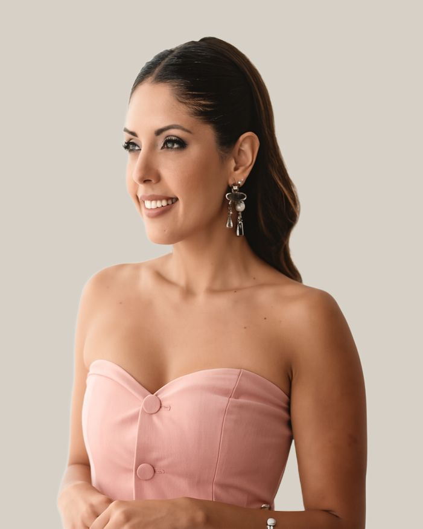
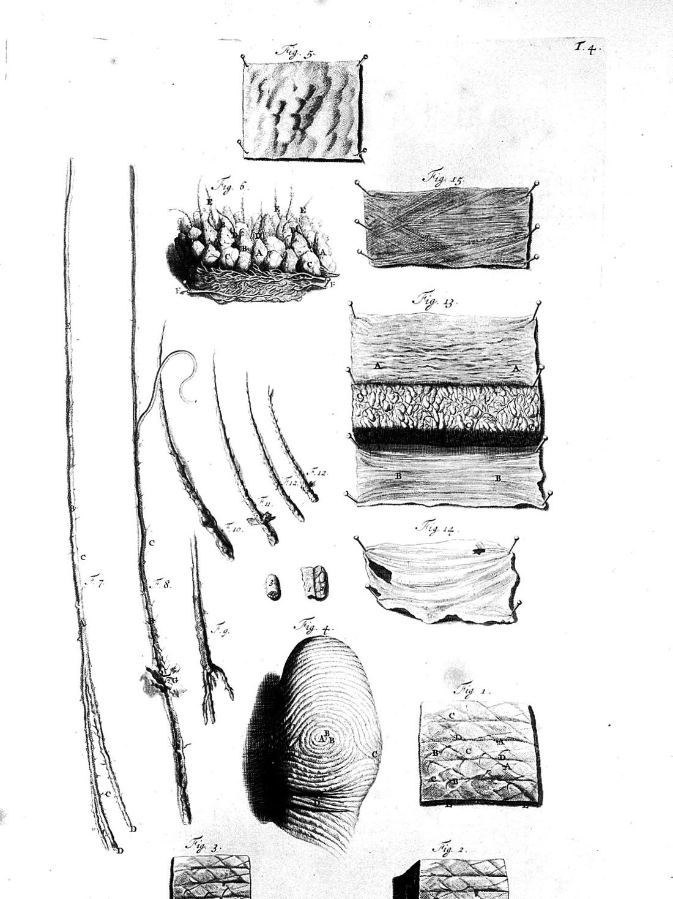

Larissa Pessoa
Fundadora e CEO da Hairzenit. Tricologista especializada em queda de cabelo e calvície.


Da clínica com o seu nome à Hairzenit

Por anos, a clínica levou o nome dela: Larissa Pessoa Tricologia Integrativa, em Copacabana e Cabo Frio.
O consultório cresceu, a equipe também, e o método que Larissa desenvolveu passou a ser conduzido por outras tricologistas. A Hairzenit é a forma desse crescimento: uma clínica com estrutura, equipe e nome próprios, fundada e dirigida por ela.
Quem procura por Larissa Pessoa continua encontrando Larissa Pessoa. Ela segue atendendo, agora dentro da Hairzenit, na Consulta com Larissa Pessoa.
Uma história com a queda
Larissa já passou pela queda de cabelo. Conhece de perto o efeito dela na autoestima, e é isso que orienta o jeito como cada consulta é conduzida: tempo para ouvir, explicação clara de cada achado e acompanhamento próximo.
É também o que explica a escolha de trabalhar só com um assunto. Queda e calvície, em mulheres e homens, sem cirurgia.
Publicações

Dois estudos de caso sobre alopecia androgenética, escritos com a equipe da clínica e a Faculdade de Farmácia da UFRJ.
Impacts of Personalized Multimodal Treatment in the Clinical Management of Androgenetic Alopecia: A Case Report
Larissa Mota Barros Pessoa, Lara Junqueira, Thaina Candido de Souza. Brazilian Journal of Hair Health, v. 2, n. 1, 2025. doi.org/10.62742/2965-7911.2025.2.bjhh20 ↗
Integrated Therapeutic Approaches in the Treatment of Female Androgenetic Alopecia: A Case Report
Lara Junqueira, Larissa Mota Barros Pessoa, Thaina Candido de Souza. Brazilian Journal of Hair Health, v. 2, n. 1, 2025. doi.org/10.62742/2965-7911.2025.2.bjhh22 ↗
A Consulta com Larissa Pessoa tem agenda própria e valor diferenciado.
Quer ser atendido por Larissa?
Copacabana e Cabo Frio, com hora marcada. WhatsApp (21) 97278-0789.